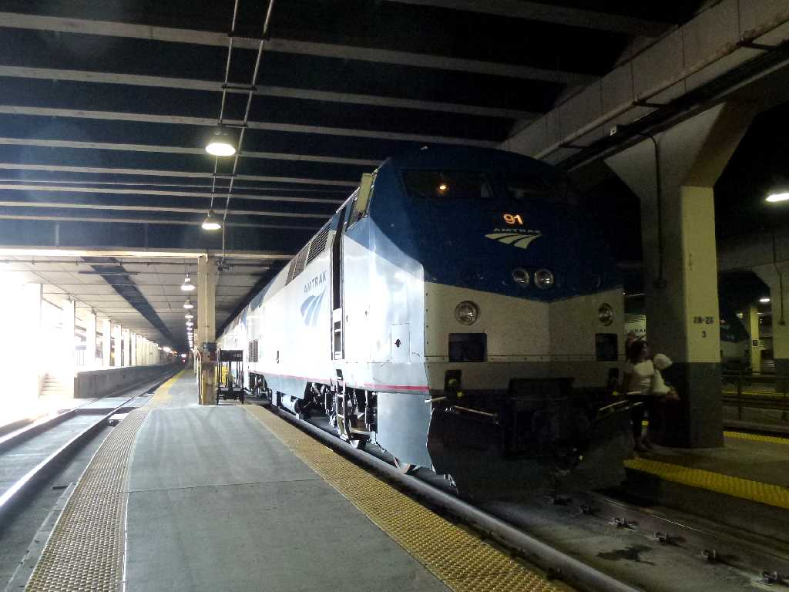
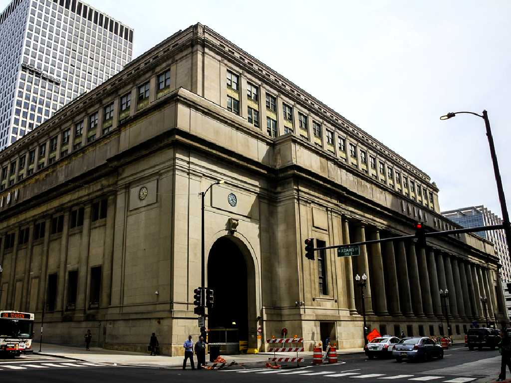
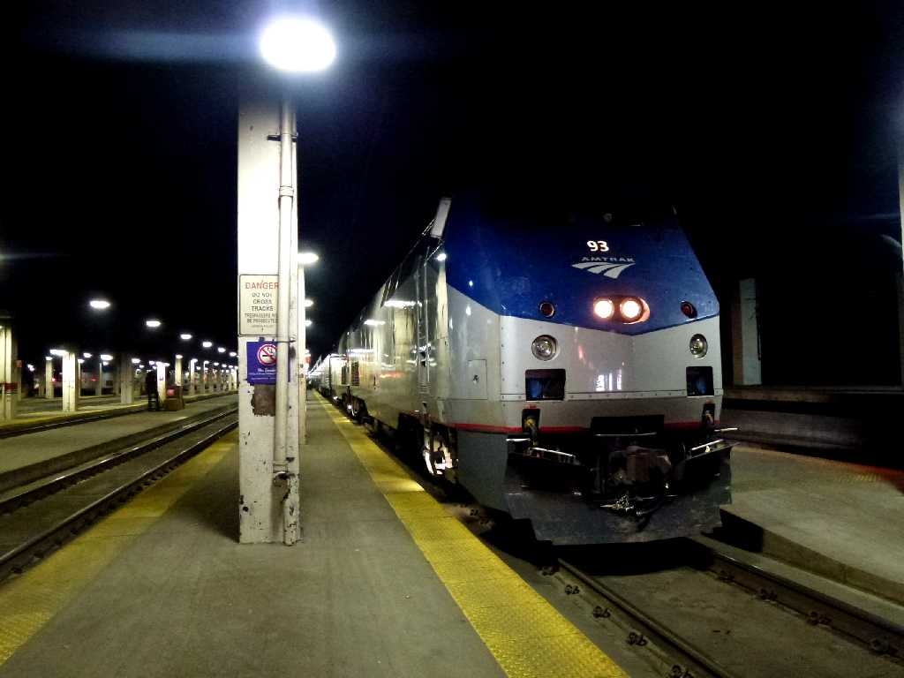
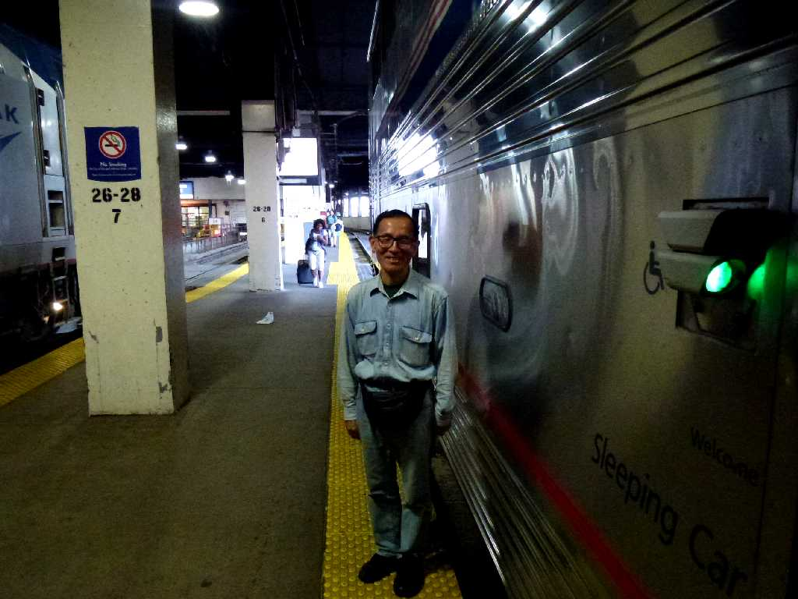

August 29 2013 Union Station Chicago
Lake Shore Limited Train No.49 Timetable Amtrak August 28 15:45 Pennsylvania New York to August 29 9:45 Union Chicago
８０日間世界一周鉄道の旅で６７日目 アムトラックのレイクショアリミテッドでニューヨークのペンシルベニア駅を出発しシカゴのユニオン駅に到着

Union Station Chicago

September 3 2013 Union Station Chicago
California Zephyr Train No.5 Timetable Amtrak September 3 14:00 Union Chicago to September 5 16:10 Emeryville
８０日間世界一周鉄道の旅で７２日目 アムトラックのカリフォルニアゼファーでシカゴユニオン駅を離れサンフランシスコ郊外のエメリービル駅に向け出発

September 3 2013 California Zephyr Union Station Chicago